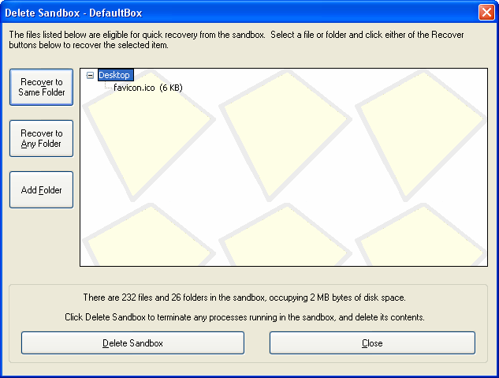

Delete Sandbox
Sandboxie Control > Sandbox Menu > Delete Contents
Sandboxie Control > Tray Icon Menu > Delete Contents

The Delete Sandbox window appears when the sandbox is about to be deleted. The window is split into two areas:
-
The upper part (about 3/4 of the window) shows the Quick Recovery display and controls, and operates in the same way as the Quick Recovery window. See Quick Recovery for more information.
-
The lower part counts the size of the sandbox (in files, folders, and bytes of disk space) and contains the Delete Sandbox button which initiates delete processing for the sandbox.
The window is displayed when the Sandbox Menu > Sandbox > Delete Contents command (or the corresponding command from the Tray Icon Menu) is invoked.
The window is also displayed if the sandbox is configured for automatic delete (see Sandbox Settings > Delete > Invocation), and any files are eligible for Quick Recovery. Note that if no files are eligible, the sandbox is deleted silently, without displaying the Delete Sandbox window.
Note that the Delete Sandbox command terminates any programs that are running in the sandbox and initiates the delete process. An empty sandbox will be immediately available to run programs as soon as you click the Delete Sandbox button. While the delete process is undergoing on the old sandbox, the Sandboxie tray icon changes to a red X icon to indicate that sandbox delete is in progress. In correct operation, the red X icon should not remain displayed for more than a few seconds.
Go to Quick Recovery, Sandboxie Control, Help Topics.